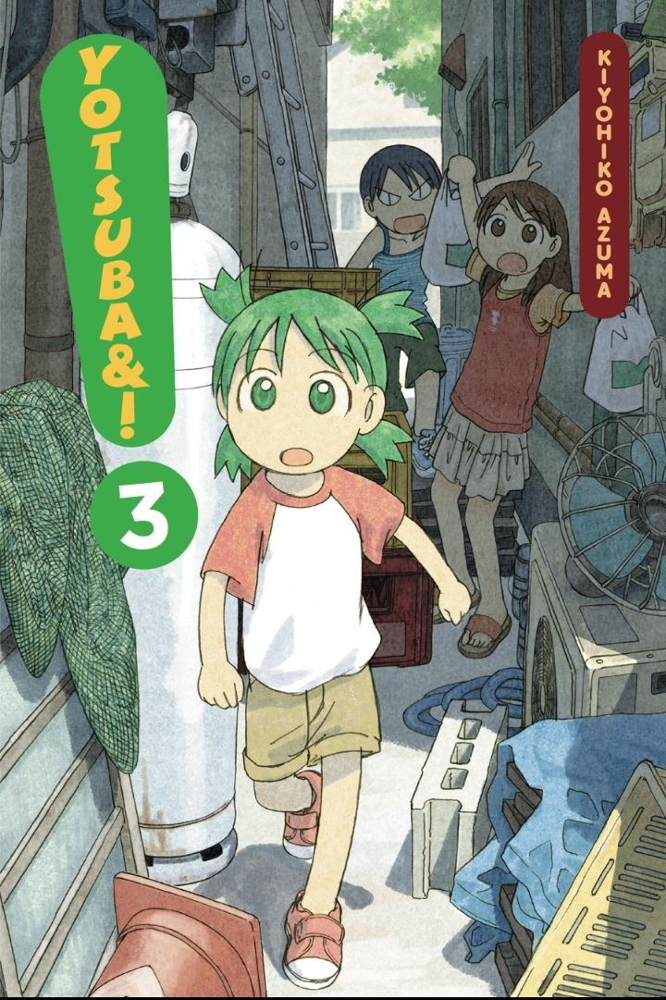
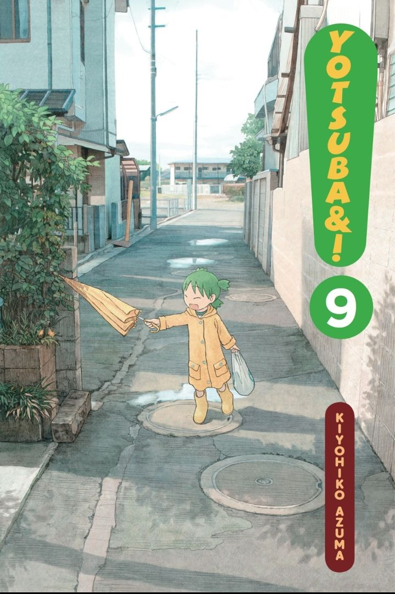
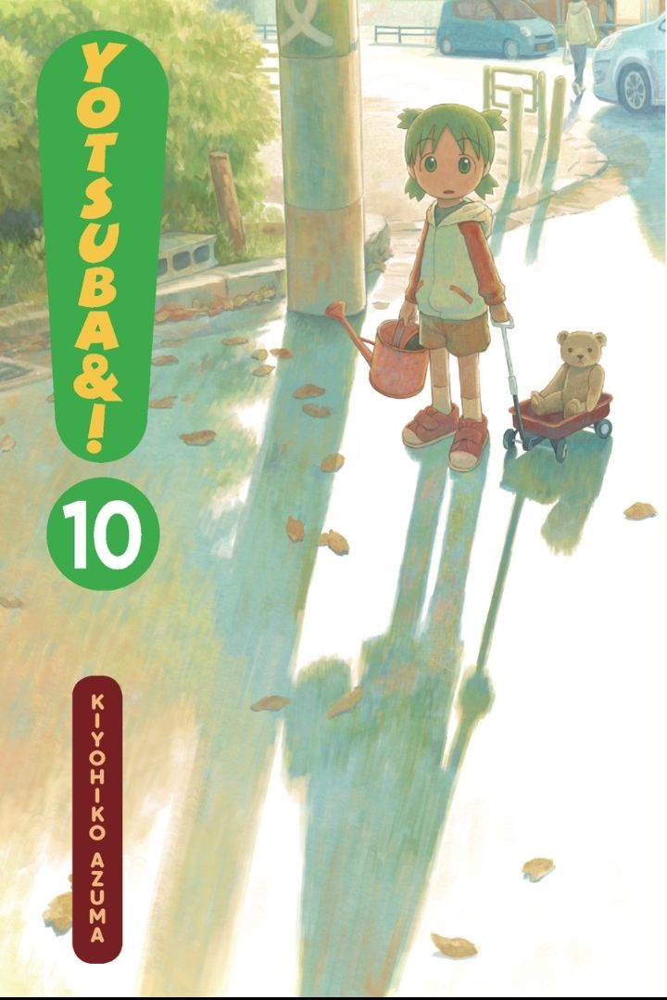
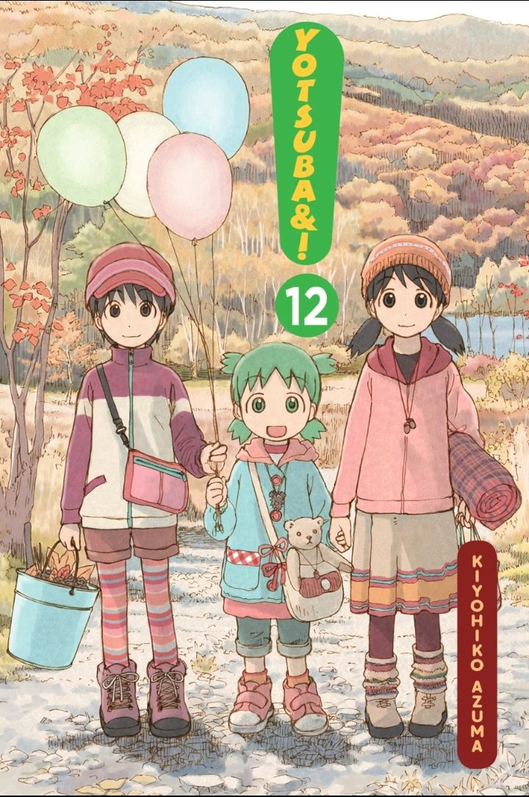
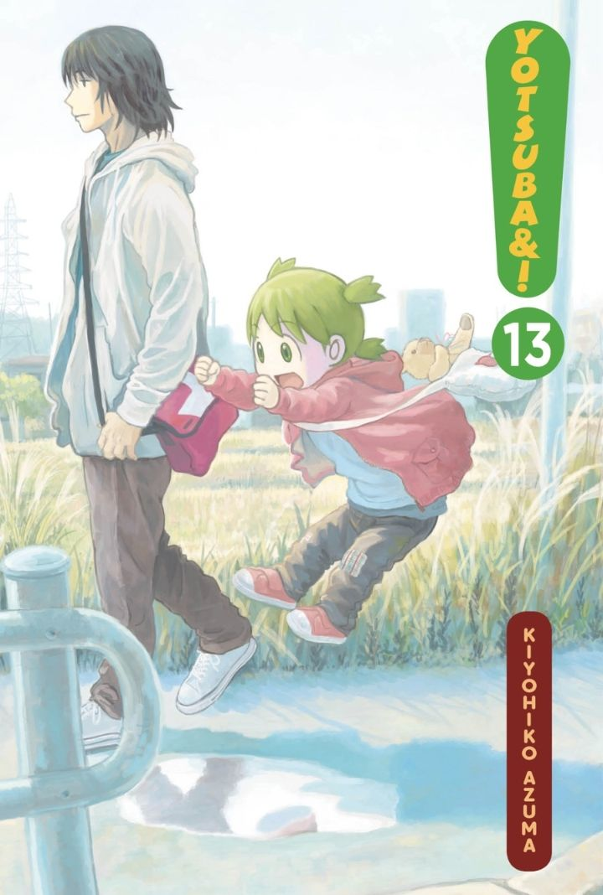
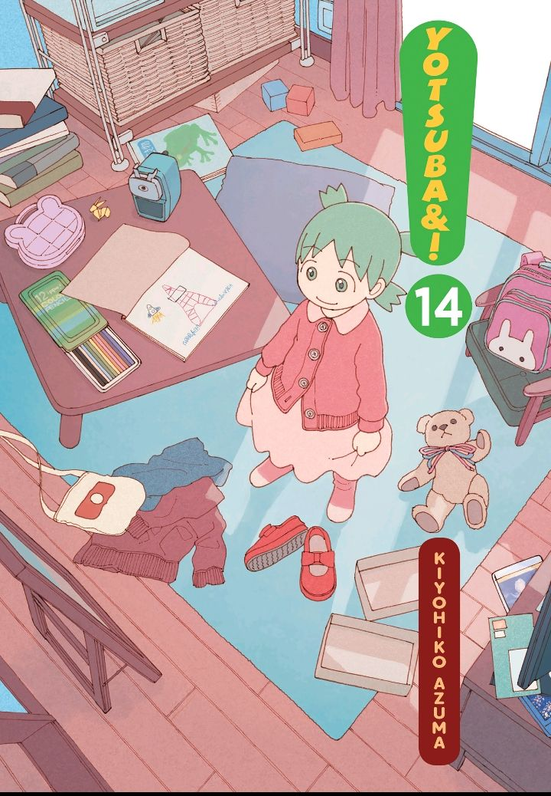
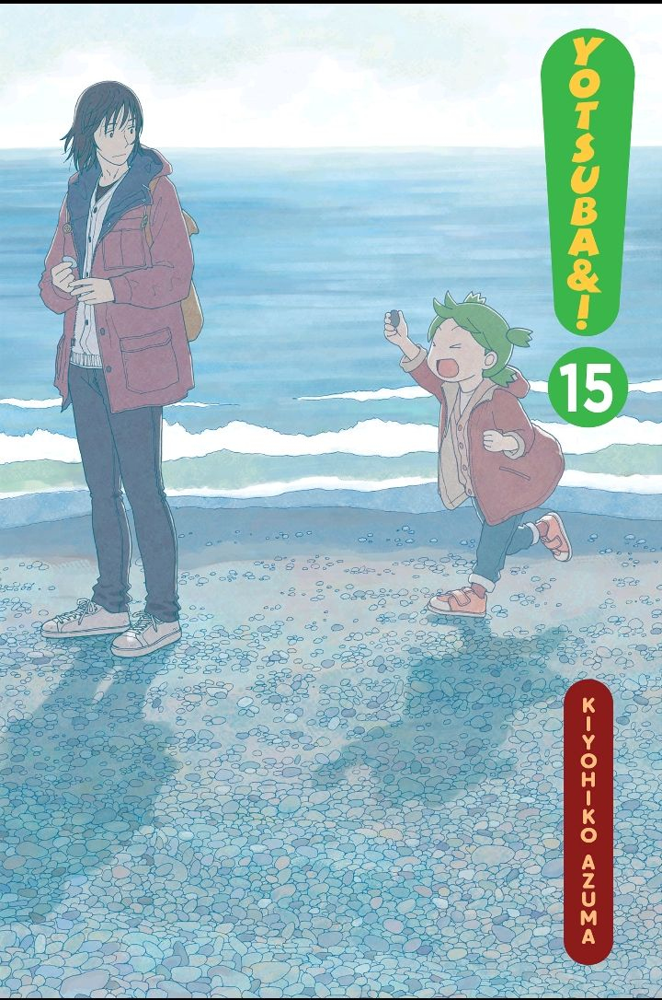

Yotsuba&! (よつばと!) is a Japanese manga series written and illustrated by Kiyohiko Azuma, the creator of Azumanga Daioh. It has been serialized since January 2003 in the monthly magazine Dengeki Daioh by ASCII Media Works, formerly MediaWorks, and has since been collected into 15 tankōbon volumes. It depicts the everyday adventures of a young girl named Yotsuba as she learns about the world around her, guided by her adoptive father, their neighbors, and their friends. Several characters in Yotsuba&! were previously featured in a one-shot manga by Azuma called "Try! Try! Try!"
 |
 |
 |  |
 |
 |
 |  |  |
|
|  |  |  |  |